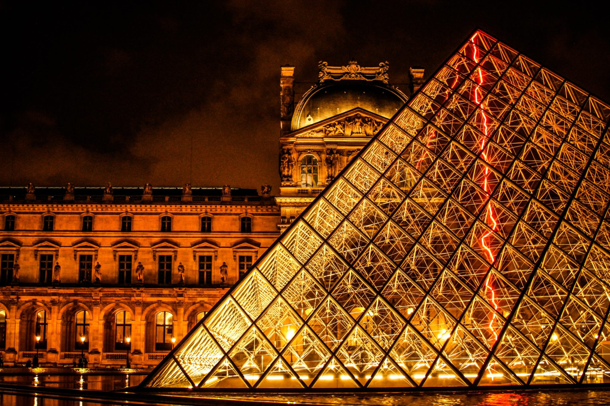
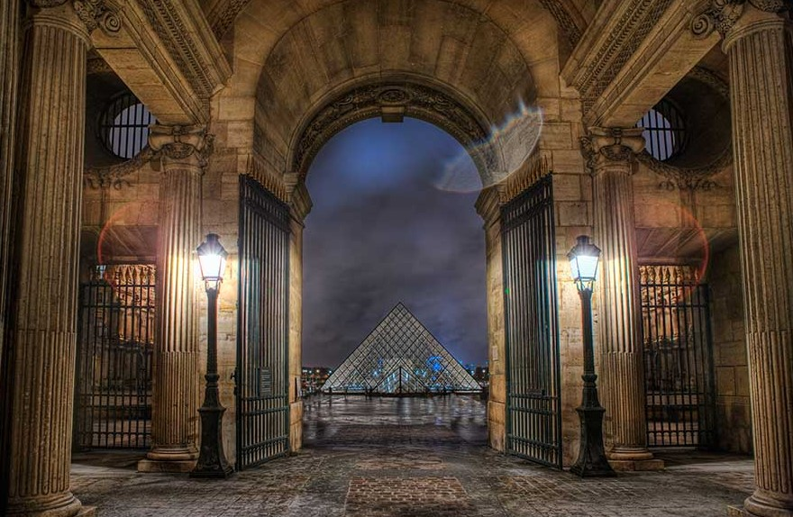
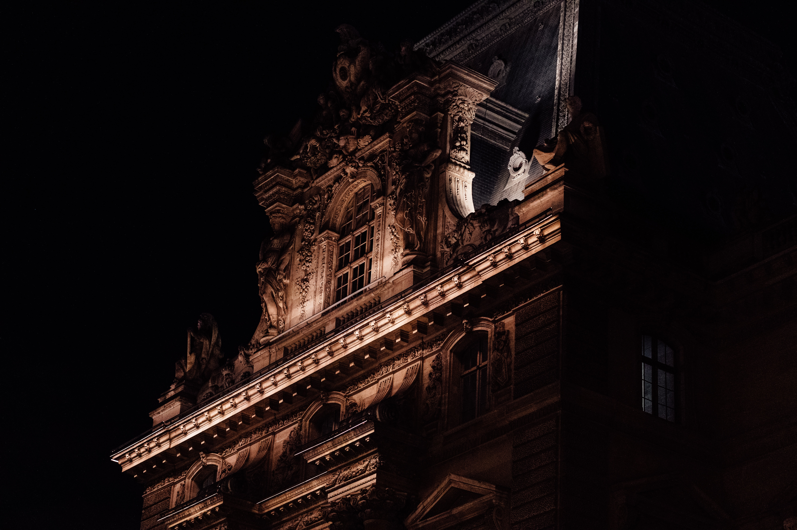
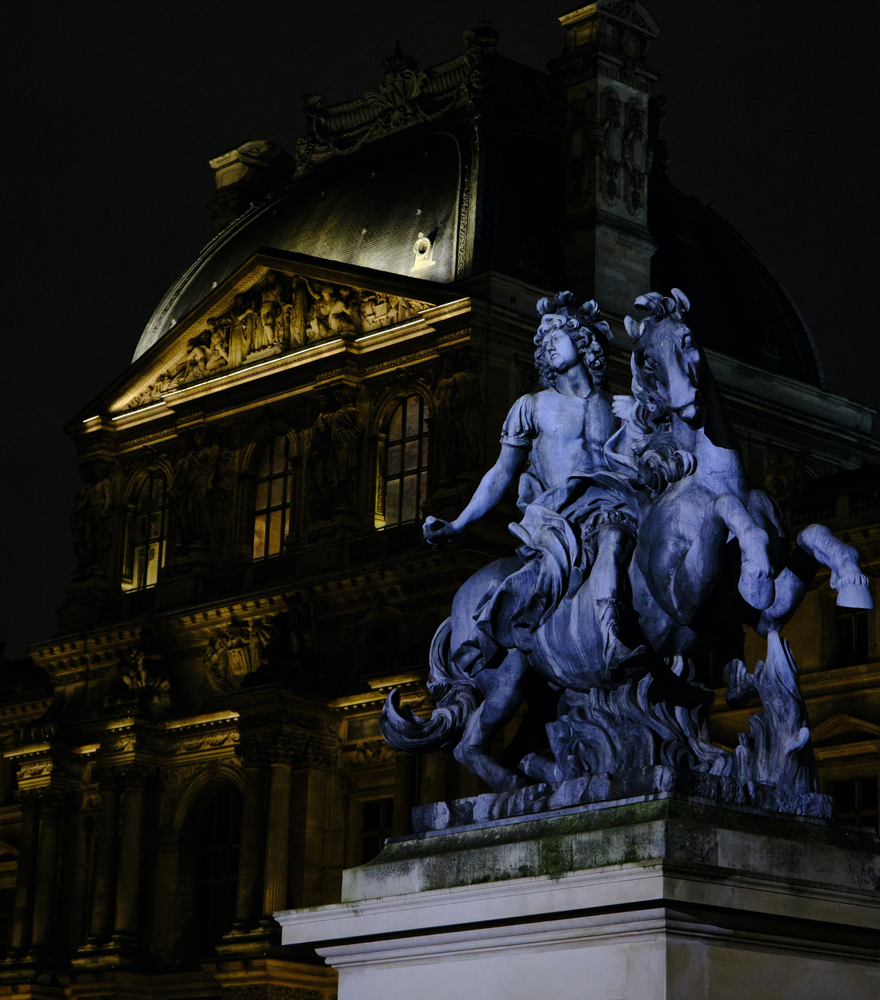

In addition to being the most visited museum in the world, the Louvre is also the biggest. So big, in fact, that you can hardly tell that you’re sharing the space with 15,000 other visitors at any given time. The Louvre was originally built as a grand fortress in Paris, and was later turned into a royal palace in the 16th century before becoming a museum in 1793. It was shut down for a while when the infrastructure proved to be unfit for regular visitors. The next biggest museum on the planet would be the State Hermitage Museum in St Petersburg, Russia.
The pyramid in question was only added to the Louvre’s grounds very recently in the 1980s. Surprisingly, it was not a French architect who was selected for the job, but rather a Chinese man named I.M. Pei. The main pyramid has become an important and recognizable part of the Parisian skyline, and there are three smaller versions of the structure in the surrounding courtyard.
It is impossible, as a human being, to see the entire Louvre museum in just one day. In fact, even a month of exploring this space wouldn’t be enough. If you were to spend 30 seconds on each piece of art in the Louvre, it would take 100 consecutive days to get through them all. That is without sleep, breaks or mealtimes.
The most famous museum in the world is fittingly home to one of the most famous paintings in the world. Leonardo da Vinci is Mona Lisa is a permanent resident at the Louvre museum. This famous artwork is responsible for a large portion of the visitors that make their way to this museum each day. So much so, that the painting is now kept behind a glass barrier, and there are barricades preventing anyone from getting too close for comfort. She is a lot smaller than you think!
.jpg)
The Nazis raided homes and businesses across the country and removed artworks at their discretion. This stolen art needed housing, and the Louvre was emptied out and used as a storeroom for all that they acquired. In 2018, the Louvre put on a display of a series of paintings that were once looted by said Nazis. An interesting representation of a time not very long ago at all.
When Napoleon came into power, he put his ego front and center and renamed the Louvre Museum the Musée Napoleon. He expanded the museum’s collection by roughly 5000 paintings, however these were returned to their rightful owners when the leader fell from power. Napoleon also took the Mona Lisa into his private quarters and hung the painting for the first time.
